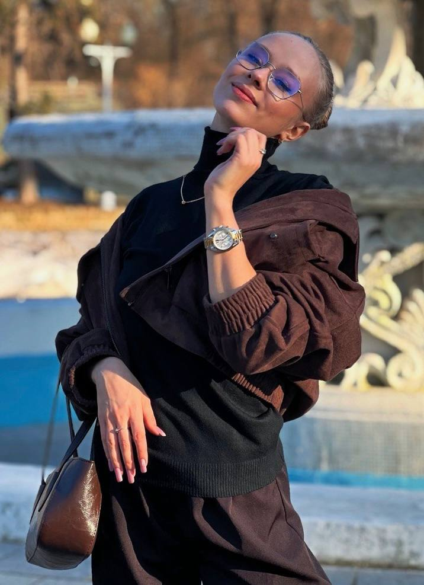

Дарья Заинчуковская
Public Relations Manager
ОБРАЗОВАНИЕ
Получаю высшее образование в МГУ им. М. В. Ломоносова (факультет журналистики, бюджетная основа, 4 курс, бакалавриат, выпуск 2026). Ранее обучалась в СПбГУ на филологическом факультете (новогреческий язык).
ПРИМЕРЫ УСПЕШНЫХ КЕЙСОВ
-
Media Relations: трансформировала медиаполе бизнес-клуба CLUB 500, ранее несшее за собой негативный шлейф, сместив фокус на Tier-1 медиа. Обеспечила охват в 58 млн за 6 месяцев и регулярную цитируемость спикеров по сложным бизнесовым темам.
-
Международный питчинг: защитила коммерческое предложение на английском языке для CEO крупной турецкой клиники, успешно отработав все возражения клиента на этапе тендера.
-
Стратегическое партнерство: инициировала коллаборацию с международным брендом Ferrero Russia, выявив пересечения их ESG-повестки с задачами нашего клиента. Провела переговоры с топ-менеджментом компании на итальянском языке.
-
Event PR: обеспечила on-site информационное сопровождение международного форума «Земляне» (100+ публикаций в Telegram-канале в режиме real-time). За высокий уровень организации работы получила личную благодарность от Правительства Архангельской области.
-
Real-time PR: в процессе сопровождения бизнес-мероприятия CLUB 500, когда клиент случайным образом привел ко мне налогового консультанта, в течение 30 минут подготовила вопросы для незапланированного интервью с экспертом на тему изменений в налоговом законодательстве в 2025 году, тем самым обеспечив клиенту моментальную публикацию в СМИ Tier-1
ОПЫТ РАБОТЫ
-
1. «Аймарс Медиа», коммуникационное агентство 360°
PR Manager, сентябрь 2024 – апрель 2026
Работа со СМИ и управление репутацией:
- Комплексное PR-сопровождение брендов и взаимодействие со СМИ (Tier-1, Tier-2, Tier-3).
- Внедрение инструментов стратегического планирования (CJM, матрица тем) для систематизации коммуникаций.
- Антикризисный PR: мониторинг инфополя, корректировка публикаций через контакты в редакциях, подготовка Q&A по чувствительным темам.
- Стратегия и развитие бизнеса: мониторинг рынка, поиск потенциальных клиентов и первичная коммуникация для получения брифов.
- Участие в полном цикле подготовки тендерных предложений: генерация идей на мозговых штурмах, разработка структуры коммерческих предложений (КП), подготовка презентаций.
- Защита коммуникационных стратегий перед клиентами (в т.ч. международными).
- Информационное сопровождение оффлайн-мероприятий: управление контентом в режиме real-time, организация фото/видео продакшна, приглашение журналистов и коммуникация с ними.
- Influencer-маркетинг: анализ рынка, медиапланирование и подбор блогеров (тематика – авто, авиа, лайфстайл, бьюти и др.).
- Размещение в Telegram-каналах: аналитика каналов, подготовка медиалиста, организация посевов, написание и редактура постов, контроль их размещений.
- PR-сопровождение международного проекта (Росатом Африка): ведение соцсетей проекта (написание текстов, дизайн визуалов), взаимодействие с отделом мониторинга (оперативные оповещения, спецотчеты), подготовка аналитики, срочные переводы статей и расшифровка материалов, обновление баз зарубежных СМИ, прямая коммуникация с клиентом.
-
2. Side Project
PR & Talent Manager, октябрь 2025 – ноябрь 2025
- Разработка комплексной PR-стратегии развития личного бренда (ниша – Art&Dance).
- Аудит профилей в соцмедиа (LiveDune) и построение дорожных карт масштабирования.
- Подготовка медиакита с описанием метрик и УТП для коммуникации с рекламодателями.
- Сегментация баз целевых брендов и ведение холодного питчинга.
- Реализация механики zero-budget marketing (бартерные коллаборации).
-
3. Студия консалтинга и коммуникаций YOU ARE
PR Manager, май 2024 – август 2024
- Обеспечение органического роста телеграм-канала CEO через партнерства и взаимопиар.
- Организация участия CEO в качестве эксперта в рейтинговых подкастах (Яндекс.Музыка).
- Подготовка фактологической базы для колонок через анализ и адаптацию англоязычных источников.
- Разработка и упаковка спикерских профилей для питчинга героев на конференции.
-
4. Онлайн-школа «Точка знаний»
Marketing Communications, декабрь 2024 – июнь 2024
- Организация серии оффлайн-презентаций образовательных продуктов в школах.
- Внедрение элементов геймификации в образовательный процесс.
- Тестирование и интеграция новых каналов коммуникации со студентами.
- Подготовка текстов для email-рассылок.
НАВЫКИ И ИНСТРУМЕНТЫ
-
Hard Skills: разработка PR-стратегий, базы СМИ, Influencer Marketing, Event Management, Копирайтинг, Telegram-посевы, защита проектов, создание лендингов (GitHub), базовое программирование (изучаю Python).
-
Tools & Tech: Медиалогия, TGStat, LiveDune, Pressfeed, SimilarWeb, PR-CY, Excel, Word, PowerPoint. Использование AI (ChatGPT, Midjourney, Gemini, Claude, Sora. Comet и др.) для ускорения работы. Владею Canva, CapCut, Inshot.
ДОПОЛНИТЕЛЬНАЯ ИНФОРМАЦИЯ
Английский (B2) – опыт защиты проектов и переговоров с CEO турецкой клиникой;
Итальянский (B1) – опыт коммуникации с топ-менеджментом междунарожного бизнеса;
Русский (родной).